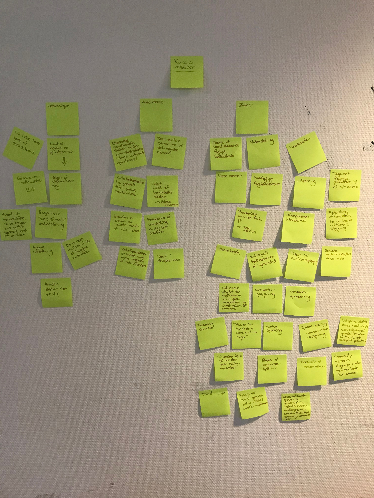
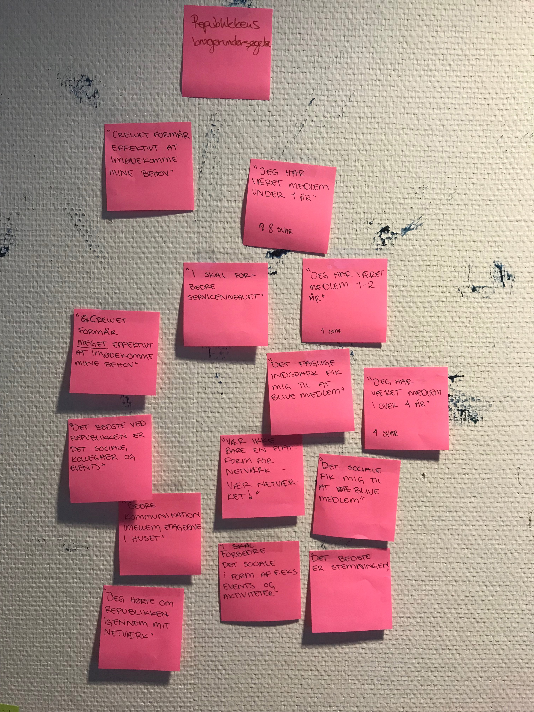
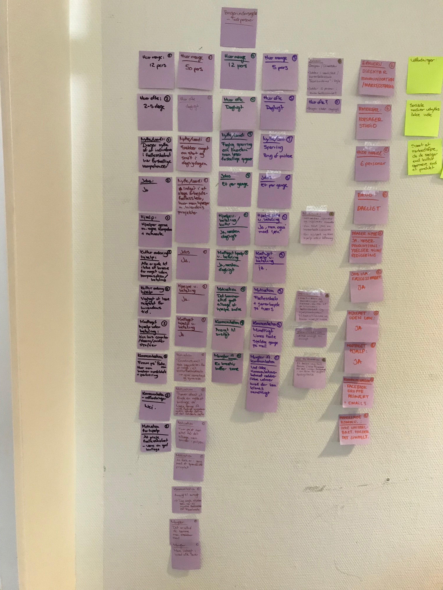
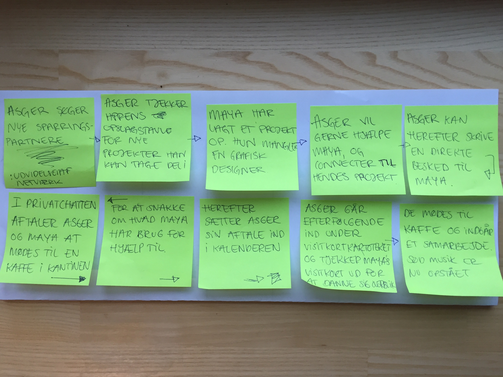
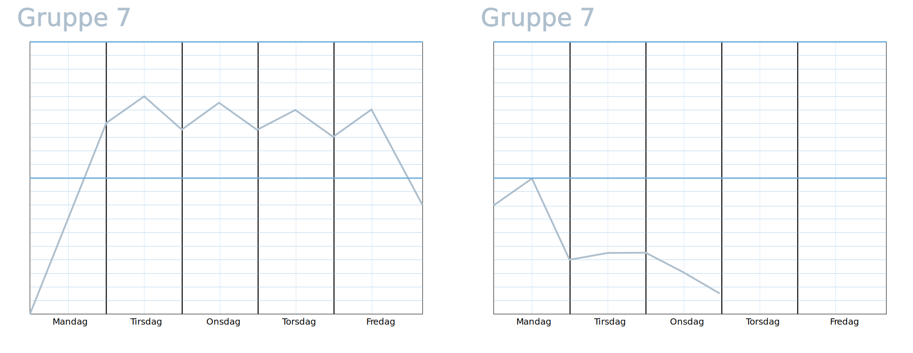
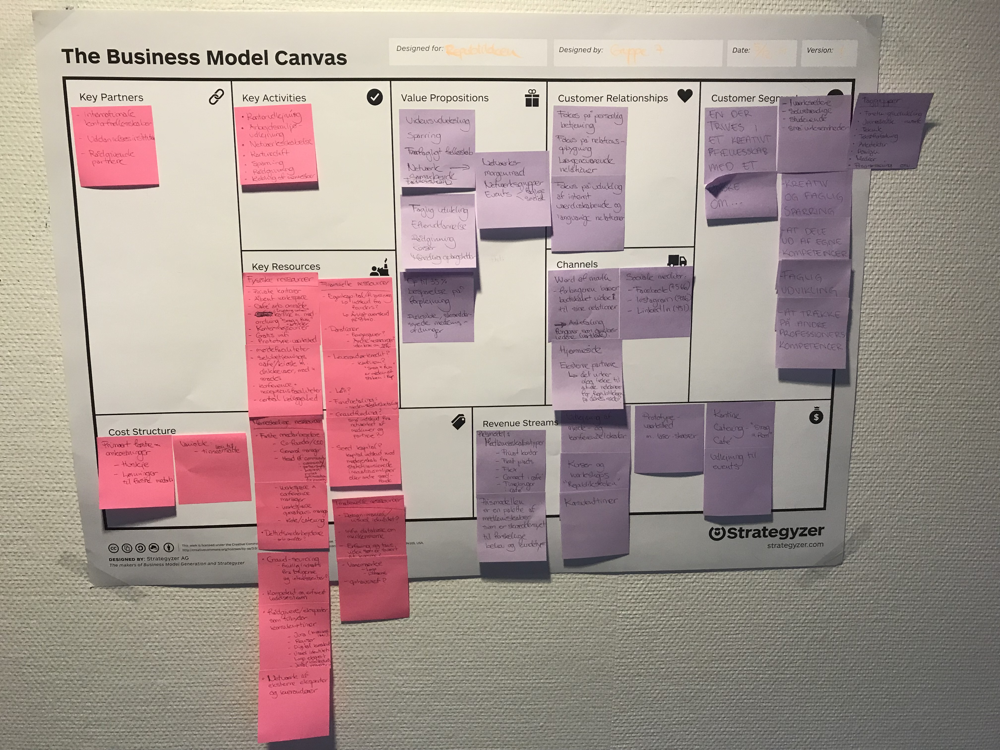

Gå til præsentationssitet eller dokumentationssitet.
CoCreate APP lavet for Republikken - gør sparring lettere
Dette var mit andet XD projekt, som er en app min gruppe og jeg lavede for kontorfællesskabet Republikken i København. Designet er lavet i Illustrator og sat sammen i XD, som har givet os muligheden for at se hvordan appen ville fungere i virkeligheden. Vi har i dette forløb benyttet os af udviklingsmetoden Scrum og brugt GitHub til at dele kodningsfiler internt i gruppen.
Benyttede programmer
- XD
- InDesign
- Illustrator
- Photoshop
- Brackets
Fokus:
- Design og visualisering
- Kommunikation
- Virksomheden
Moodboard

Styletile

Dannelse af pain point
For at afdække Republikkens medlemmers behov, indsamlede vi data fra en brugerundersøgelse blandt nuværende medlemmer og holdt dem op mod virksomhedens egne udtalelser. Ud fra vores experience map, kunne vi derfra danne et pain point, som vi kunne arbejde videre med.
Med vores research om virksomhedens værdier og visioner og vores valgte pain point, var vi klar til at gå i gang med Design Thinking processen.
Virksomhedens udtalelser
Republikkens undersøgelse
Brugerundersøgelse af medlemmer
Design Thinking
I dette forløb benyttede vi Design Thinking metoden, som er en måde at tænke kreativt på. Processen består af 6 faser: Empathize, Define, Ideate, Prototype, Test og Implement. Denne metode har været super nyttig, da alle gruppemedlemmer har skulle komme med idéer og alle er derfor også blevet hørt. Ved at benytte faserne Prototype og Test, kunne vi teste vores app på forsøgspersoner, inden vi implementerede den i XD.
Storyboard
Burn Down Chart
Implementering af appen
Da vi nåede til Implement fasen, havde vi valgt vores endelige idé, som blev CoCreate appen. Ved at bruge XD til at forbinde appens funktioner med de tilhørende sider, kunne vi lave en funktionel prototype, som gav en klar fornemmelse for det endelige resultat, som vi kunne præsentere for Republikken.
The Business Model Canvas
Gå til præsentationssitet eller dokumentationssitet.